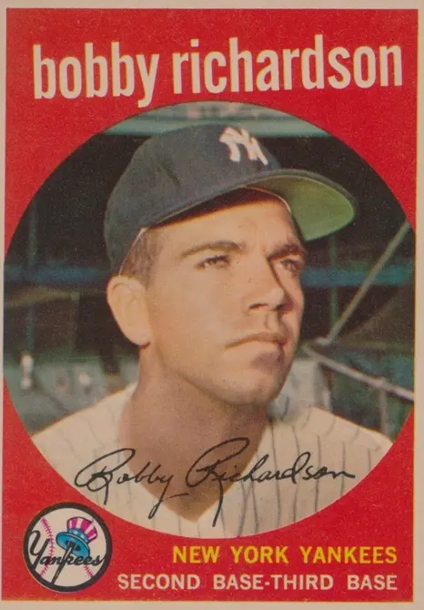

Bobby Richardson
Career Highlights & Facts
(Facts are AI-generated and may require verification)
- Holds the record for most runs batted in during a single World Series.
- Earned 5 Gold Glove Awards while playing second base.
- Remains the only player from a losing side to win the World Series MVP award.
Would you like to find out more about Bobby Richardson?
Bobby Richardson played second base for the New York Yankees from 1955 to 1966, a key contributor during one of the Yankees’ most successful stretches in their legendary history. Richardson was by all accounts a slick, rangy glove man and a steady stick man. He won the Gold Glove Award five times, he batted over .300 in two different seasons, and he was selected to the American League All-Star team eight times.
And when the October spotlight was turned on, Richardson excelled. His lifetime regular season statistics include a .266 batting average, a .299 on-base percentage, and a .335 slugging percentage. In World Series play, however, he batted .305 with a .331 on-base percentage and a .405 slugging percentage.
Richardson played in seven World Series, 36 games in all, including a major-league record 30 consecutive World Series games, and he holds several remarkable World Series hitting records as well. He is one of only four players to have 11 or more hits in two different World Series, he has the most RBIs in a World Series [12], and the most RBIs in a single World Series game [6]. His total of 40 World Series hits places him at #14 on the list of Most World Series Hits in a Career, through the 2024 season. Richardson is the only second baseman and the only player from the losing team to win the
Sport
Magazine World Series MVP award.
Bobby Richardson was inarguably one of the best second sackers in his day, and a convincing case could be made that he is the greatest all-time Yankees second baseman after Hall of Famer
Tony Lazzeri
.
Robert Clinton Richardson Jr., was born on August 19, 1935, the second child born to Robert Clinton Sr. and Willie (nee Owens) Richardson of Sumter, South Carolina. Older sister Inez was born one year earlier and little sister Willie Ann was born one year later. His father was part-owner and manager of Richardson Marble and Granite Works and his mother was a homemaker. (“My father was the type who would sit quietly in the bleachers and watch me play.”)
Bobby’s early influences in baseball were an older neighborhood boy named Harry Stokes and his Edmunds High School and Sumter American Legion baseball coach “Hutch” Hutchinson. Bobby played in the YMCA program for a team sponsored by the Salvation Army when he was ten years old, and on a team sponsored by the Kiwanis Club for the next several years. During those formative years, he badgered Harry to play catch with him, and despite a seven-year difference in age, Harry obliged. Bobby played shortstop on the Sumter American Legion team that, under Coach Hutchinson, won the state championship team in 1952.
The Yankees’ Norfolk, Virginia, farm club manager
Mayo Smith
and Yankee scout Bill Harris had their eye on Richardson—but so did 11 other major league clubs (there were only 16 major league teams at the time!), as did Georgia Tech and the University of North Carolina who offered Richardson scholarships to play ball for them. But on June 12, 1953, the day he graduated high school, Bobby signed with the Yankees. Bobby traveled to Norfolk by bus with a jar full of coins taken up as a collection from his friends and neighbors in Sumter. “Eighty-five dollars in coins!” recalls Richardson. He played 27 games at Class B Norfolk, but was re-assigned to the Class D Olean, New York, club later that season where he performed much better. He attempted to further his education several times during the off-season in those first years after high school, but never successfully. (“My two doctorates are honorary,” admits Richardson.)
Bobby was not big when he broke into professional baseball, not yet the 5’9” and 166 pounds that would appear on the back of his later baseball cards. But he was an outstanding middle infielder. In 1954 he jumped to Class A Binghamton, where he batted .310 and was voted Most Valuable Player of the Eastern League. He moved up to Triple A Denver, where he batted .296 in 1955 and .328 in 1956. Bobby was the American Association’s All-Star second baseman in both years.
Baseball Digest
publishes reports on promising major league rookies each March. For Bobby, the report read: “Best infielder for his age in years.”
In 1955 at age 19, Richardson was called up to the Yankees because
Gil McDougald
was knocked out of the lineup when he got hit by a line drive during batting practice. Bobby made his major league debut on August 5, 1955. In the fourth inning, he walked and stole second, followed by a walk to
Mickey Mantle
. They both scored on
Yogi Berra
‘s 200th career home run. That was all the Bronx Bombers needed as they defeated the Tigers, 3-0. Richardson got his first big league hit when he singled off rookie
Jim Bunning
in the seventh inning. In the field, however, Bobby admits he was a “nervous wreck” that game as he waited for his first major league defensive chance that never came.
Richardson would later select this game among all the games he ever played as the Game of His Life.
However, with McDougald healed, Richardson was sent back down to Triple A Richmond on August 19, his 20th birthday.
Bobby had the tools but it was tough breaking into a lineup that touted All-Stars McDougald,
Billy Martin
Jerry Coleman
, and
Phil Rizzuto
. At the start of the 1956 season he traveled north with the club, but he saw playing time in only five games before being sent back down to Denver.
However, in 1957, Richardson finally got more playing time with Martin being traded to Kansas City and Coleman in his final big league season. “Bobby Richardson had arrived,” declared the
New York
Times
.
Richardson, who was batting over .300 in June, was selected to the 1957 All-Star team. Even so, the crusty
Casey Stengel
, who during his twelve-year stretch as Yankee manager (1949-1960) took the club to the World Series ten times, loved to platoon his players, including Richardson. (“Casey never called me by my name. He always called me ‘Kid’,” recalls Bobby.) Richardson did not like the ever-changing lineup, just as he did not like it when Casey pinch hit for him before he batted even once in a game, or when the skipper batted him ninth in the order behind a good hitting pitcher like
Don Larsen
or
Mickey McDermott
or
Tommy Byrne
. But that was Casey’s style. On at least one occasion, Casey pinch hit for
Bill Skowron
and
Clete Boyer
before their first plate appearance, too (for Boyer, it happened in his very first World Series game!), and he batted Martin and Rizzuto ninth in the order. None of them liked it.
Although his early Yankee years were not easy, Richardson persisted, aided by his dad’s support and his faith. Everyone—his teammates, his fans, the media—knew Bobby, a Southern Baptist, to be a righteous and right-living man. Stengel said famously of Richardson, “Look at him. He doesn’t drink, he doesn’t smoke, he doesn’t chew, he doesn’t stay out late, and he still can’t hit .250.” Bobby and his roommate and best friend on the team,
Tony Kubek
, were dubbed “The Milkshake Twins” for their decorous lifestyle.
Nineteen fifty-nine was Richardson’s breakout year. Bobby gives much of the credit for his hitting improvement to batting coach
Bill Dickey
. The Hall of Famer told Bobby to use a heavier bat and swing harder, and suddenly, sharply hit ground balls and line drives were piling up for hits. He had the highest batting average on the club, and he was third on the team in hits and triples.
His two hits on the last day of the 1959 season against the Baltimore Orioles make for a great baseball story. The Bombers did not have even one .300 hitter that year, but before that final game, Casey learned that Bobby, who had hit safely in the last eighteen consecutive games, needed just one hit to reach that mark. He told Bobby, “Get a hit and I’ll take you out.” It turned out that Bobby had friends on the O’s, too. Third baseman
Brooks Robinson
passed by to say, “I’ll be playing deep today,” inviting Bobby to bunt for the hit. Birds’ catcher
Joe Ginsberg
let Bobby know that starting pitcher
Billy O’Dell
, an off-season hunting buddy of Richardson’s, would lay his pitches in. Even first base umpire Ed Hurley knew what was going on: “If you hit it on the ground, just make it close,” he told Bobby. But on his first trip to the plate Bobby hit a line drive to right field that
Albie Pearson
snared. “Pearson was one of my closest friends in the game—we’d spoken together at church! He must have been the only person in the ballpark who didn’t know I was supposed to get my hit!”
But Bobby collected two singles off his pal O’Dell to finish precisely at .3006 before Casey pinch-hit for him in the eighth inning.
Richardson’s celebrity afforded him the opportunity for public speaking (especially with the Christian ministries that he pursued both during the off-season and after his playing career ended) and for the occasional TV advertisement (though never for alcohol or cigarettes). In his autobiography he tells a wonderful self-deprecating story about how he flubbed through nine takes doing a razor blade commercial because, in his nervousness, he repeatedly called them “blazor rades.”
In 1960, the durable Richardson played in 150 of the team’s 154 games (the schedule expanded to 162 games in the following year), although his average dropped 49 points. However, as with several other seasons, Richardson is remembered not for his regular season play in 1960 but for his incredible World Series performance. The 1960 World Series was a re-match of the New York Yankees and the Pittsburgh Pirates who last faced each other in 1927. Richardson had a quiet Game 1 but a very busy Game 2. He had 11 chances in the field, and one walk and three hits, including a Series record two in one inning. He scored three runs and knocked in two others as New York rallied 16-3 to even the Series at one game apiece.
In Game 3 in between catching the ceremonial first pitch from the just-retired
Ted Williams
and strike three to
Gino Cimoli
to end the game, Yankee catcher
Elston Howard
had two hits, but it was Ellie’s infield hit in the first inning that Bobby Richardson will always remember.
Clem Labine
relieved
“Vinegar Bend” Mizell
to face Howard with the bases loaded and one run in already. The big catcher beat out a slow roller toward third to score Mickey Mantle. That brought Richardson up with the bases still loaded. Bobby strode to the batter’s box, expecting the whole time for Stengel to call him back as he often did in a situation like this. He soon learned why Casey had not sent up a pinch-hitter. Third base coach
Frank Crosetti
flashed Richardson the sign for a squeeze bunt! “Not a good baseball move in this situation,” thought Richardson. Nevertheless, he tried to bunt but he fouled off two pitches. Then, on a 3-2 pitch, Richardson belted a high inside fastball into the left field bleachers. The smallest Yankee had hit only three home runs in 1,578 regular season plate appearances in his six major league seasons up to that point, but on this afternoon he became the seventh player in World Series competition to hit a grand-slam home run, the first one in Yankee Stadium World Series history.
Bobby was not done. When he came to bat in the fourth inning, again Bill Skowron, Gil McDougald, and Elston Howard clogged the bases. This time Bobby ripped a single into left field off
Red Witt
to drive in two more runs in front of 70,001 cheering hometown fans. (“I wanted to hit a home run that time, too.”) His six RBIs in a game broke the record of five RBIs tied by Mantle just two days earlier.
Richardson collected two more hits and an RBI in Game 4, but he was shut down in Game 5. In Game 6, Richardson slugged two triples both to deep leftfield in
Forbes Field
and knocked in three more runs. In Game 7, Casey batted Richardson in the leadoff spot and Bobby responded by getting two hits and scoring two runs, including a crucial lead-off single and a run scored in the top of the ninth, as the Yankees clawed back after losing the lead in the eighth. But as every baseball fan knows, the Pirates won the game and the Series when
Bill Mazeroski
led off the bottom of the ninth with the first walk-off home run in World Series history, an event that
The
Sporting News
ranked second only to “The Shot Heard ‘Round the World” in its list of Baseball’s 25 Greatest Moments published in 1999.
Richardson amassed 11 hits in 30 at-bats (.367) in that Series, with two doubles, two triples, and one home run, good for a .667 slugging percentage. He batted .462 with runners in scoring position. He scored eight runs; his 12 RBIs are a World Series record (tied by Freddie Freeman in 2024), and he was the first player in World Series history to record 6 RBIs in a game (since accomplished three more times through 2024). He also made 28 assists and 21 putouts, including 7 double plays. Yet, according to Mantle, Bobby was “dad-gummed surprised” when he was named the Most Valuable Player of the 1960 World Series. “’Dad-gum’ was about as rough as [Bobby’s] language ever got,” says his long-time buddy.
Sport
Magazine awarded Richardson a new Corvette. But with two kids and a third on the way, when he went back to South Carolina after the Series ended, the unpretentious little slugger traded in the Corvette for a Chevy station wagon.
Bobby remembers his only other major league grand-slam home run. On August 16, 1962, the Yanks were down by three runs in the ninth inning against the Twins in Minnesota. The bases were loaded with
Dick Stigman
on the mound. As Bobby came up to bat, Mickey said to Bobby, “See if you can hit one out. I’m not feeling too good today.”
Dutifully, though implausibly, Richardson obliged with a shot down the left field line to put the Yankees ahead, 8-7. Relief pitcher
Marshall Bridges
could not hold the lead, however, and the Twins scored once in the ninth and again in the tenth to win the game.
Less than one week after the 1960 World Series ended, in what would turn out to be a turning point in Bobby’s career, coach
Ralph Houk
was promoted to replace manager Casey Stengel. Houk knew Bobby from when Houk managed the Denver farm club in 1955 and 1956. And in 1958 it was Houk, the Yankees’ general manager at the time, who helped convince Bobby not to quit baseball when he was slumping. Unlike Stengel, Houk used a steady lineup. Richardson played in all 162 games in 1961 (a grueling feat, considering that the Yankees played 23 doubleheaders that year) and usually batted first or second in the order.
Richardson was awarded his first Gold Glove Award in 1961 as he improved his fielding percentage to .978 and led the league with 413 putouts and 136 double plays, anchoring a solid defensive infield of 3b Clete Boyer, ss Tony Kubek, 2b Richardson, and 1b Bill Skowron (“Moose paid me 500 bucks a year to catch all the pop-ups behind him.”)
The Yankees outscored the Cincinnati Reds 27 to 13 in the 1961 World Series and won the Series in five games. Richardson had a fine Series against the Reds, collecting nine hits (five of them off lefty
Jim O’Toole
) and batting .391, with 8 singles, a double, and 2 runs scored—but no RBIs this year unlike the year before! As of this writing, Richardson’s nine hits (tied with ten others) and 23 at-bats (tied with two others) are still major league records for a 5-game World Series.
Richardson’s most productive year was 1962. He led the American League and recorded personal career best performances with 754 total plate appearances, 692 official at-bats, and 209 hits. As of this writing, his 692 ABs and 754 TPAs still ranks Bobby among the top five of all time in the American League in those two single-season categories. With a mere 24 strikeouts, Bobby struck out only one time for every 28.8 official at-bats that year. And with opposing pitchers not wanting to walk Bobby in front of Mantle and
Roger Maris
, Bobby racked up several other personal-best batting performances that year: .302 batting average, 38 doubles (led the team; fourth in the American League), 8 home runs, 59 RBIs, 99 runs scored (led the team), 37 walks, a slugging average of .406 and an on-base percentage of .337. He also led the Yankees and the league with 20 sacrifice bunts. He won his second Gold Glove Award and finished second to Mickey Mantle in the voting for the American League’s Most Valuable Player Award.
The 1962 World Series against the San Francisco Giants was notable for both franchises. The San Francisco Giants and their fans remember this World Series as the most heart-wrenching of the three Series they lost after moving to the West Coast. The New York Yankees and their fans remember it as the last World Series victory until 1977. Game 7 at
Candlestick Park
was a genuine nail-biter, a pitching duel between the Giants’
Jack Sanford
and Yankee ace
Ralph Terry
, both of whom were able to pitch even though they pitched Game 5 because of the three days of rain that postponed Game 6. The Yankees scored the only run in the game when Bill Skowron crossed the plate as the Giants were completing a 6–4–3 double play on a Tony Kubek ground ball in the fifth inning. The ninth inning has been written about extensively, but here’s how Richardson remembers it:
Pinch-hitter
Matty Alou
led off the bottom of the ninth with a drag bunt base hit that I could not get to in time.
Felipe Alou
attempted to bunt him over but was unsuccessful. He struck out, as did the next batter
Chuck Hiller
. Then
Willie Mays
slapped a double down the right field line. Roger Maris made a wonderful play to cut the ball off before it reached the corner. He threw the ball to me at the cutoff position and I got rid of the ball quick and it was on line. When Maris got me the ball, third base coach
Whitey Lockman
held up Matty Alou at third. But as it turned out my throw took a high bounce and Ellie Howard had to reach up for it. Who knows? Had Alou been trying to score, he might have been able to slide under the tag.
With the tying and winning runs on third and second base, Ralph Houk visited the mound to check with Terry, the same Ralph Terry who gave up Bill Mazeroski’s home run in Pittsburgh two years earlier. Terry and Houk decided to pitch to
Willie McCovey
—even though he tripled in his previous at-bat and homered off Terry in Game Two—rather than pitch to the on-deck batter
Orlando Cepeda
whom Terry already struck out twice in the game.
McCovey hit a long foul ball down the right field line on the first pitch. On the second pitch, he hit a line shot right at Richardson that Bobby caught shoulder high and the Yankees won the Series. “People often suggest that I was out of position on that play,” recalls Bobby. “But McCovey hit two hard ground balls to me earlier in the Series, so I played where I thought he would hit the ball.”
That play was listed by
The
Sporting News
as #13 of Baseball’s 25 Greatest Moments. It also underlay the famous quote by Willie McCovey epitomizing the fragility of success in the game of baseball:
I broke in with a 4-for-4 my rookie year against a Hall of Fame pitcher,
Robin Roberts
. I hit more grand slams [18] than anybody in National League history. I hit more home runs [521] than any lefthanded hitter in the National League. But that out is what many people remember about me. … I would rather be remembered as the guy who hit the ball six inches over Bobby Richardson’s head.
In 1963 Bobby’s batting average dropped back to .265. He tied his own career high and tied Elston Howard for the team lead with 6 triples. He stole a career-high 15 bases to lead the Yankees and finish 7th in the American League. He won his third Gold Glove Award with a personal best .984 fielding percentage. Bobby did not hit well in the World Series between the Yankees and the Los Angeles Dodgers that year, but he did appear in all four World Series games increasing his string to 23 consecutive World Series games.
Bobby missed 11 games during the 1963 regular season, mostly to visit with his father or help handle family affairs after his father suffered a stroke in May and died on June 17.
The Yankees enjoyed another successful season in 1964, with their fifth consecutive World Series appearance (14 out of their last 16 seasons), and another pretty good year for Richardson. He ranked third in the league with 181 hits along with his league-leading 679 ABs, for a .267 batting average, and he won the Gold Glove Award again. He collected his “elusive” 1,000th hit on June 12, 1964, in the first game of a doubleheader with the Chicago White Sox: “He had hit the ball solidly five times Thursday night in Boston and twice last night before the ball dropped in,” reported the
New York
Times
.
On that evening, Richardson was presented with the Lou Gehrig Memorial Award which had been bestowed on him following the 1963 season. This award, established by Lou Gehrig’s college fraternity at Columbia University in 1955, is presented annually to the major league baseball player who both on and off the field best exemplifies the character of
Lou Gehrig
—an extremely meaningful award for the young man who wanted to play for the Yankees ever since he first saw The Pride of the Yankees.
The 1964 World Series against the St. Louis Cardinals would be Richardson’s last—and the Yankees’ last until 1976. It was a dramatic, hard fought Series with the Yankees scoring 32 runs and the Cards scoring 33. The Cardinals won the Series in Game 7. World Series MVP
Bob Gibson
pitched two complete-game victories (one went 10 innings) plus 8 innings in his only loss, with 31 strikeouts in those 27 innings. Remarkably, Richardson had 7 hits including a double in 14 at-bats against Gibson. In all, he had a team-high 13 hits and .406 batting average. As of this writing, his 13 hits is still a major league record for a 7-game World Series (tied with two others). However, Bobby laments the 1964 Series for the two errors he made that he claims “may well have been the difference between winning and losing for the Yankees.” He thought he was redeemed when
Tom Tresh
hit a two-out, two-run homer in the bottom of the ninth inning in Game 5 to tie the game. “Bobby Richardson, whose error had allowed one of the Cardinal runs, was so excited he jumped up from the bench, striking his head on the concrete dugout roof and almost knocking himself out cold.”
But the Yanks lost in extra innings and went into Game 6 down three games to two instead of the other way around before they ultimately lost the Series.
The Yankees started the 1965 season in historic fashion. On April 9, 1965, they traveled to Texas to play an exhibition game against the Houston Astros as part of the grand opening of the Harris County Domed Stadium, better known as the
Houston Astrodome
.
Batting in the top of the first, Richardson was the second MLB player to ever bat in a ballpark with a roof. Mantle was the first, possibly to give him the designation of being the first major league player to bat indoors.
Richardson had a number of four-hit games, but his biggest offensive outbursts were two five-hit games at the tail end of his career. On May 10, 1965, in the first game of a doubleheader against the Indians in Cleveland, Bobby had five singles in a game the Yankees won, 12-–2. On June 29, 1966, Bobby went 5 –for– 5 in the Yankees’ 6–5 win over the Red Sox at
Fenway Park
. His solo home run into the left field screen was followed by home runs from Mickey Mantle (his second of the game) and
Joe Pepitone
for a back-to-back-to-back outburst.
Although Bobby was still the best at his position in 1965—with his seventh All-Star Game selection and fifth consecutive Gold Glove Award—he planned to retire after the 1965 season. However, Tony Kubek’s chronic back and neck injuries finally caught up with him, and his doctors advised him to retire. The Yankees did not want to lose both members of their double play combination in the same year, so they offered Richardson a five-year contract if he would play one more year and then assist the club in some minimal functions for the other four, which he did.
On August 31, 1966, at age 31, Bobby Richardson announced his retirement from professional baseball: “This will be my last year as far as playing baseball for the New York Yankees. I will close out the year with 10 years and 56 days of real enjoyment spent in Yankee Stadium and the clubhouses and diamonds of the league. But I feel the time has come when I really should spend a little more time with my family.”
The years of shuttling his family from Sumter to Ft. Lauderdale to Ridgewood, New Jersey, would soon be over.
Neither the Yanks nor Richardson finished the 1966 season strong. The Yankees lost 15 of their final 24 games to drop them into last place of the American League standings for the first time since 1912, when the club was known as the New York Highlanders. Bobby had just 8 hits in his last 55 at-bats, but one of them was memorable. On Sunday, September 11, 1966, in Fenway Park, Richardson smacked a solo home run in the top of the tenth inning off
John Wyatt
to break a 2–2 tie and help the Yankees defeat the Red Sox, 4–2. It was Bobby’s last major league home run.
On the final day of the season, Sunday, October 2, Richardson played his last game in the big leagues. He accounted for both Yankee runs in a 2–0 win over the Chicago White Sox at
Comiskey Park
. Batting third in the lineup, Bobby singled in the first inning for his 1,432nd and final major league hit, but he was erased on a double play. In the third inning
Al Downing
scored on Richardson’s RBI groundout. In the sixth inning Bobby reached second on an error by rookie right fielder
Buddy Bradford
, advanced to third on a
Tommy John
wild pitch, and scored on
Steve Whitaker
‘s single. Richardson’s last major league at bat was a groundout, second to first, off pitcher
Jack Lamabe
.
Richardson finished his career with 1,412 regular season games and a .266 lifetime batting average. He led the league three times in at-bats (1962–1964). Although Richardson did not draw many walks, he was a splendid batter at the top of the Yankee order. He was tough to strike out (only 243 in 5,780 career plate appearances), tough to double up (only 100 times in his career), and a great bunter—he had 98 sacrifice bunts in his career, good enough to finish in the AL’s top ten in that category seven times, and twice (1962 and 1964) he led the league.
In the field, Bobby was known as one of the second-sackers of his era “who could turn a good double play”
and the DP combo of Kubek and Richardson was among the best in the big leagues in the Sixties, just as Rizzuto and Coleman were in the Fifties. Bobby claims he learned a lot from Jerry Coleman about making the pivot.
Richardson turned a total of 963 double plays from second base, but during his last seven years, he averaged an incredible 111.5 DPs per season. In four of those years (1961-63, 1965), he led the American League in that category. The 136 double plays Richardson turned in 1961 was second only to Coleman’s 137 for the most double plays by a Yankee second baseman in a season.
Richardson was even involved in a couple of triple plays.
The first happened on May 16, 1957, when the Kansas City Athletics had
Jim Pisoni
(who would be traded to the Yankees a month later)
on first and
Hector Lopez
(also a future Yankee) on second. Veteran pitcher
Alex Kellner
attempted to bunt the runners over, but popped up the pitch from
Bob Turley
. Turley rushed in and caught the pop up, whirled and threw to shortstop
Gil McDougald
at second base, who then whipped the ball to Richardson covering first for the triple play. On September 4, 1965, rare triple play lightning struck again for Richardson. With Boston’s
Tony Conigliaro
on second and
Rico Petrocelli
on first, catcher
Bob Tillman
hit a ground ball to third. Clete Boyer started a routine double play, Boyer to Richardson to Pepitone. But when Conigliaro stopped running between second and third, apparently thinking there were three outs, Pepitone alertly threw to Boyer, who tagged Conigliaro for the third out.
Bobby Richardson’s legacy is the rich and balanced life he lived both in and out of baseball. He is married to the former Betsy Dobson, whom he married on June 8, 1956 (“It was unusual for anyone to let a player go and get married during the season but Ralph [Houk] said it was okay so I went.”) Bobby recalls that Betsy scored better than he did at miniature golf on their first date in 1954. They are active in their ministries together (“Betsy is the best counselor I’ve ever known,” proclaims Bobby). They have five children: Robbie (born June 2, 1957), Ron (July 13, 1958), Christie (December 30, 1960), Jeannie (January 21, 1964) and Rich (August 27, 1968). Robert Clinton III, who played baseball at the University of South Carolina when his dad coached there, is a pastor in North Muskegon (“I’m not very good with computers,” admits Bobby. “Whenever I have a question about computers, I ask Robbie”). Ron, an Academic All-American in football and baseball at Wheaton College, is now the pastor in the Richardsons’ congregation in Sumter. Christie, a teacher, is married to a youth pastor, and Jeannie, the best athlete in the family, according to her dad, is married to John Kaye, who coached with Bobby at Liberty College. Rich, the only child of Betsy and Bobby not yet born when the Yankees honored his dad at Yankee Stadium on September 17, 1966, with “Bobby Richardson Day,” graduated from Clemson and is in real estate in Atlanta. All the children, and even some of his 15 grandchildren, hunt with Bobby, a hunting enthusiast his whole life.
Throughout his playing career Bobby was extremely active in community and Christian organizations and events. He was the Sumter YMCA general secretary, and was involved in the Fellowship of Christian Athletes, the American Tract Society (a religious publishing body), South Carolina’s tuberculosis campaign and innumerable other charities and organizations. He even hosted a radio sports show. After he retired, Bobby remained active with those organizations, plus others, such as The Baseball Assistance Team
, the Baseball Chapel (where he served as President for 10 years), the President’s Council for Physical Fitness, and Toastmasters International where is the only sports figure to win the prestigious Golden Gavel Award (1974).
Soon after Richardson retired from baseball, he was asked to be the head baseball coach at the University of South Carolina. Because he was still under the five-year contract with the Yankees, he was forced to decline at first. When the Yankees agreed to release him, however, Bobby took the coaching job in 1970. He was the head baseball coach at USC from 1970 to 1976, the head coach and athletic director at Coastal Carolina College from 1984 to 1986, and the head coach, athletic director and Assistant to the Chancellor at Liberty University from 1987 to 1990. With his reputation and major league connections, Richardson successfully recruited very good ballplayers, including seven future major leaguers, as he turned the USC program around. He coached the South Carolina Gamecocks to a 51-6 record and their first trip to the NCAA Division I College World Series in 1975, but they lost to Texas in the final game. Richardson won over 70 percent of the games he coached at USC. Later, as coach of the Coastal Carolina Chanticleers, he won the Big South Conference in 1986.
In 1976, at President Gerald Ford’s urging, Richardson resigned from coaching to make a run for Congress. He lost by less than three thousand votes. He returned to “civilian life” for several years, first to serve as the Governor’s Coordinator for Highway Safety, then on the board of a private foundation for missionaries, and next as a public-relations representative for Columbia Bible College until 1984 when he returned to coaching. He “retired” in 1990, though no one would know it by looking at his speaking engagement calendar today.
In his playing career and his life, Bobby Richardson cast a longer shadow than his 5’9” frame might suggest. He was a good hitter and a marvelous set-up man for one of the most famous slugging duos in baseball history. He was an excellent fielder for a team loaded with groundball-inducing pitchers. Above all, he was a member of the New York Yankee family during one of their most golden eras, and he was proud of it. Famously, Mickey Mantle’s widow, Merlyn, asked “the Preacher” to deliver the eulogy at Mickey’s funeral service in 1995. The Mantles were at Roger Maris’ funeral ten years earlier when Bobby recited a poem that a fan sent him, and Mickey made Richardson promise that he would read it at Mickey’s funeral, too.
Bobby Richardson is in the breed of Yankees that baseball fans mention when creating a list of “true” Yankees and good guys. Although he did not play major league baseball long enough to accumulate the requisite batting credentials to merit consideration for a plaque in Cooperstown, Bobby has been honored as a Hall of Famer by three other organizations. He was inducted into the State of South Carolina Hall of Fame in 1996 and into the University of South Carolina Athletic Hall of Fame in 2004. He and Betsy were inducted into the Palmetto Family Council Hall of Honor in 2003.
Richardson is the Yankees’ Mr. October without the home runs (well, except for one), he was the keystone without the fanfare, and he is truly one of life’s Hall of Famers.
Last updated:
Mr. Richardson spoke with the author by telephone from his beach house in Litchfield, South Carolina, on March 21, 2005. Other sources used by the author include several baseball-related websites and the publications cited in these endnotes.
Major League Baseball held two All-Star games in 1959 through 1962. Richardson was selected in 1957 and for one of the 1959 games but did not play in either of those two games. In 1962 he played in both games. Incidentally, his team’s victory over the NL All-Star team in the second game of 1962 was the first of only two wins by the American League over an amazing stretch of 26 games in 23 seasons (1960–1982). Bobby played in the next four consecutive All-Star Games, in 1963, 1964, 1965, and 1966.
The
Sport
Magazine award for the World Series MVP was first awarded in 1955 and Richardson won it in 1960. In 1949, the New York chapter of the Baseball Writers of America established the Babe Ruth Award for the World Series MVP, and although that award is also given out each year, the
Sport
Magazine award is the more popular and prestigious of the two. The Babe Ruth Award winners include five second basemen, Jerry Coleman (1950), Billy Martin (1953), Bill Mazeroski (1960), Al Weis (1969), and Dick Green (1974), and one player from the losing team, Luis Tiant of the 1975 Boston Red Sox.
“Rookie Scouting Reports on Former Stars – Baseball,”
Baseball Digest
June 2000.
Bobby Richardson,
The Bobby Richardson Story
(Old Tappan, New Jersey: Fleming H. Revell Co., 1965), 84.
Dave Buscema,
Game of My Life: 20 Stories of Yankee Baseball
(Champaign, Illinois: Sports Publishing LLC, 2004), 52.
Leonard Koppett, “Yankee Knight to Have His Day,”
New York
Times
, September 11, 1966, 251.
Bill Madden,
Pride of October: What It Was to Be Young and a Yankee
(New York: Warner Books, Inc., 2003), 230. See also
The Bobby Richardson Story
, 108-109; and Gordon S. White, Jr., “Yankees, to Stop Rumors, Affirm That Stengel Will Manage Club Next Year,”
New York
Times
, September 28, 1959, 41.
Mickey Mantle with Mickey Herskowitz,
All My Octobers: My Memories of 12 World Series When the Yankees Ruled Baseball
(New York: Harper Collins Publishers, 1994), 120.
Bob Spear, “Bobby Richardson: Living a dream from the sandlots of Sumter to the hallowed ground of Yankee Stadium,”
The State
(Columbia, South Carolina), July 22, 2004. See also
Game of My Life
, 46.
Yankee third baseman Clete Boyer would later say, “I thought for sure that Houk would walk McCovey to face Cepeda, and I’m thinking that I don’t want to be the goat. I just know that Cepeda would have hit a ball off my knees or something.” https://www.baseballtoddsdugout.com/cleteboyer.html.
https://www.sportingnews.com/baseball/25moments/13.html. The play was even commemorated by Giants fan Charles Schulz in his famous
Peanuts
cartoon strip, in 1962. Linus and Charlie Brown are sitting on a curb, looking downcast. For three panels, there are no words. And then in the fourth, Charlie Brown cries out, “Why couldn’t McCovey have hit the ball just three feet higher?” Mike Littwin, “Charlie Brown: A Study in Good and Grief.” https://www.rockypreps.com/littwin/0215littw.shtml, posted on February 15, 2000.
Joseph Durso, “Yanks Beat White Sox, 6–1, 3–0, Before 38,135 Here,”
New York
Times
, June 13, 1964, 16.
Peter Golenbock,
Dynasty: The New York Yankees, 1949
–
(Englewood Cliffs, New Jersey: Prentice–Hall, 1975), 536.
https://www.baseballlibrary..stm; See also Joseph Durso, “Astros Down Yanks, 2–1, in First Major League Game Played Under Roof,”
New York
Times
, April 10, 1965, 23.
“Richardson Confirms It’s His Last Season,”
New York
Times
, September 1, 1966, 58.
Bob Feller with Burton Rocks,
Bob Feller’s Little Black Book of Baseball Wisdom
(New York: Contemporary Books, 2001). Online at https://www.baseballlibrary.com/baseballlibrary/excerpts/bob_feller3.stm
Dom Forker,
Sweet Seasons: Recollections of the 1955-1964 N.Y. Yankees
(Dallas: Taylor Publishing Company, 1989), 3.
See https://www.retrosheet.org/Research/RosciamC/Triple%20Plays%20Descriptions.pdf
A bit of coincidence and irony here: May 16, 1957, was Billy Martin’s 29th birthday. On May 15, Mickey Mantle, Whitey Ford, and a few other Yankees and their wives, took Martin to the Copacabana night club in Manhattan to celebrate, but before the night was out, Martin, always the boozer and brawler, was involved in a fight that made the papers the next day. That incident at the Copa was the reason Martin was traded a month later in a seven-player deal—including Jim Pisoni—a deal that allowed Bobby Richardson to inherit Martin’s playing position, and his uniform number (#1). For Ford’s involvement in the incident, manager Casey Stengel started Bob Turley instead of the scheduled Whitey Ford the game on May 16, and it was Turley who started the triple play.
The Baseball Assistance Team’s mission is to provide financial assistance to former players and their families, as well as other members of the “baseball family” who are facing difficult times.
Full Name
Robert Clinton Richardson
Born
August 19, 1935 at Sumter, SC (USA)
Stats
Baseball Reference
Retrosheet
Career Totals
| WAR | AB | H | HR | BA | R | RBI | SB | OBP | SLG | OPS | OPS+ |
|---|---|---|---|---|---|---|---|---|---|---|---|
| 8.1 | 5386 | 1432 | 34 | .266 | 643 | 390 | 73 | .299 | .335 | .634 | 77 |
Statistics via Baseball-Reference.com
The Original Clue